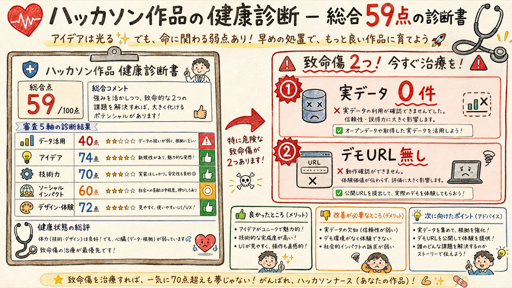
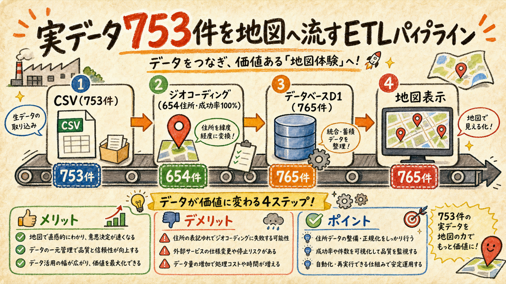
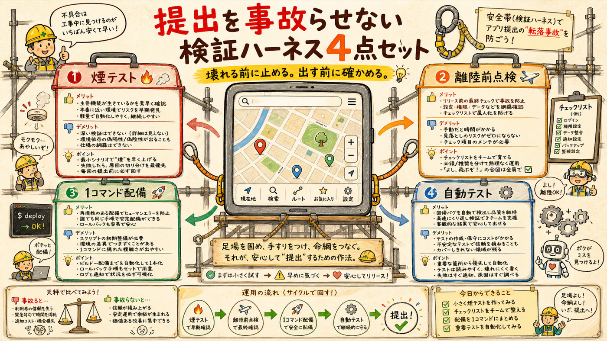
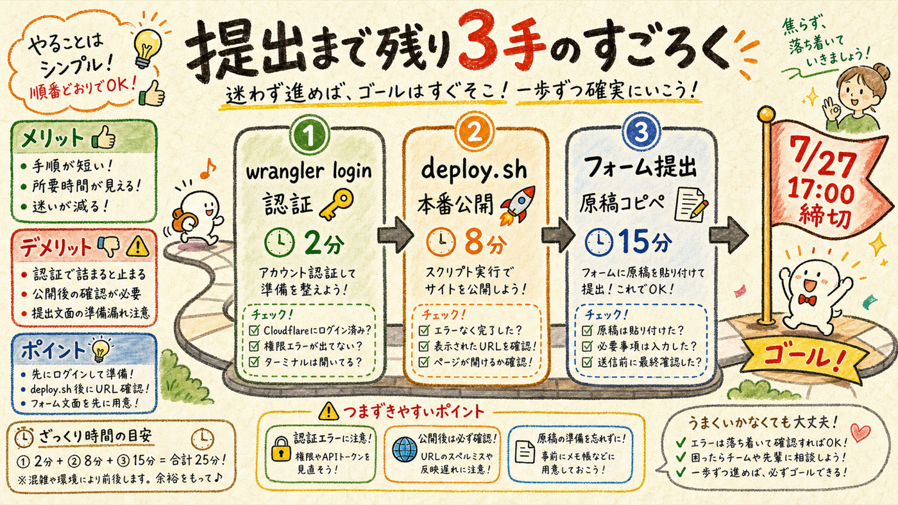

審査員視点の独立採点で弱点を特定し、致命傷だった「実オープンデータ未統合」と検証ハーネスの不在を実装で解消した。テストは40→101件全パス、独立検証96点で合格。締切7/27まで残り18日、技術的ブロッカーはゼロ。
wrangler login → bash scripts/deploy.sh → フォーム提出（前2つで約10分）テーマとアイデアは強い。主張と実態の乖離が足を引っ張っていた

まっさらな文脈の審査エージェントに、応募原稿・README・実コード・シードSQL・画面キャプチャを渡して絶対評価させた。結果は59/100。アイデア（74）と技術力（70）は水準以上、問題はデータ活用（40）だった。
| 審査軸 | 初期採点 | 主な根拠 |
|---|---|---|
| データ活用 | 40 | 実データ0件（手書きシード12件のみ）。原稿の「利用中」と乖離 |
| アイデア | 74 | 利用者別リスク変換の差別化は明確に強い |
| 技術力 | 70 | domain純関数のTDD・幾何エンジンは堅実。ただし未デプロイ |
| ソーシャルインパクト | 60 | コールドスタート未解決、仮説段階 |
| サービスデザイン | 72 | OCR→人間承認→周知キットの業務接続は筋が良い |
致命傷は2つ。①実CSVに緯度経度が無くジオコーディング未対応のため手書き12件にフォールバックしており、オープンデータ・ハッカソンなのに実データが1件も流れていない。②database_idがダミーのまま未デプロイで、審査員が触れるデモURLが無い。
住所しか無いCSVを、ジオコーディングでD1に流し込む

実CSV（753行）には緯度経度カラムが無い。起点・終点住所（「港区海岸２丁目」のような丁目単位）を国土地理院の住所検索APIでジオコーディングし、654ユニーク住所を成功率100%で解決。結果はキャッシュに永続化し、再実行時はネットに一切出ない。
source='tokyo_kensetsu' で既存の手書き12件と区別。既存データとテストは無傷位置精度は丁目セントロイド（実際の工事現場ではない）が限界。地図ポップアップに「出典: 東京都建設局（CC BY 4.0）/ 位置は丁目単位の概略」を明示し、誠実さを保った。さらに2系統目として国交省ほこナビ歩行空間ネットワーク（新宿エリア2,583リンク）を統合し、幅員2m未満・段差ありの「歩行バリア」オーバーレイを追加。
smoke・preflight・deploy・CI。smokeは初回実行で本物のバグを発見した

| 道具 | 何をするか | 実績 |
|---|---|---|
| scripts/smoke.mjs | 主要7項目のHTTPスモーク（health/一覧/geojson/csv/ルート判定/notice/OCR） | 初回実行で /api/ocr の502を発見 → nodejs_compat欠落と特定し修正 |
| scripts/preflight.mjs | 提出前チェック: テスト・database_id・認証スコープ・本番URL | 現状のダミーIDとd1:writeスコープ欠落を正しく検出 |
| scripts/deploy.sh | D1作成→ID書換→migrate→secret→deploy→smokeを1コマンドで | 手順ミスで壊れたデモURLを提出する事故を構造的に防ぐ |
| GitHub Actions CI | push毎に101テストを自動実行 | 手動実行忘れを排除 |
smokeが見つけたOCRの502は「@anthropic-ai/sdk がWorkersランタイムで node:fs を要求して認証解決に失敗する」既存バグだった。wrangler.jsonc に compatibility_flags: ["nodejs_compat"] を1行追加して解消。ハーネスは作った瞬間に元を取った。
別エージェントが実機で採点。84点で差し戻し、修正して96点合格
実装エージェントの報告は一切信じず、独立エージェントが採点表（etl_real_data 40 / smoke_and_preflight 25 / walkability 15 / integrity 20、合格90点）に沿って全て実機で検証した。SQLの753件を機械パースして座標・日付・enum逸脱を全数検査、APIをcurlで実測、smokeとpreflightは成功と失敗の両方を確認。
認証と本番公開は停止ゲート。ここだけは代行しない

| 手順 | コマンド/場所 | 所要 | なぜ本人か |
|---|---|---|---|
| ① wrangler再認証 | チャットに ! npx wrangler login と入力（!プレフィックスでこのセッション内実行） | 2分 | 現トークンにd1:writeスコープが無く、ブラウザでのOAuth承認が必要 |
| ② デプロイ | ! bash scripts/deploy.sh（D1作成→migrate→ANTHROPIC_API_KEY設定→deploy→smoke） | 8分 | 本番公開＝停止ゲート。secretの投入も本人 |
| ③ フォーム提出 | form.jotform.com/261468325066056 に原稿6項目をコピペ＋キャプチャ3点 | 15分 | 応募は本人名義 |
応募原稿は実態に合わせて更新済み（テスト40→101件、路上工事753件取込、ほこナビ「利用中」へ）。デプロイ後にやること: 原稿の「デモURLは提出時までに公開予定」を実URLに差し替え、実データが写った状態でキャプチャ3点を撮り直し、npm run preflight <本番URL> で最終確認。
注意: リポジトリはiCloud Drive上にあり、node_modules/.wrangler が同期対象のまま。「Macのストレージを最適化」が発火すると提出直前にwranglerが突然壊れるリスクがある（対処はdocs/DEPLOY.mdに記載）。また本日の変更は未コミット — 動作確認が済んだらコミット推奨。
login→deploy→提出）と、キャプチャ撮り直しのみ。技術的ブロッカーはゼロ。